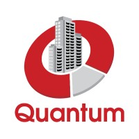
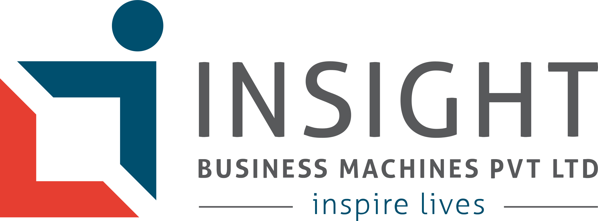
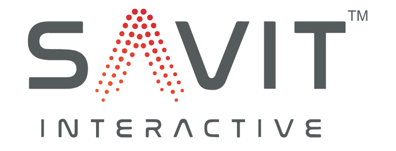
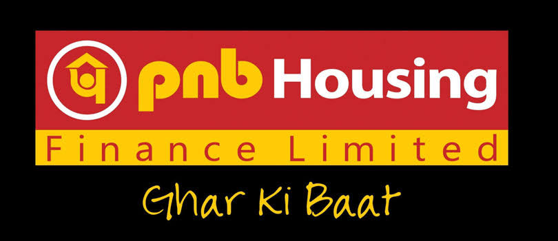
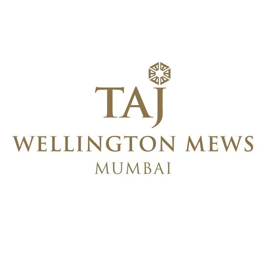

IT Infrastructure
Daily IT operations and end-user support
IT INFRASTRUCTURE & SUPPORT
IT professional with 4+ years of experience in IT infrastructure, Microsoft 365 administration, Active Directory, desktop support and network troubleshooting. CEH v12 certified, with an interest in developing further cybersecurity skills.
GET TO KNOW ME
I am an IT Engineer experienced in supporting business users, managing Microsoft 365 services, maintaining Active Directory accounts and resolving desktop, software and network issues.
My work includes end-user support, account administration, IT asset tracking, remote troubleshooting, IT documentation and coordination with vendors to help maintain reliable IT operations.
I hold the Certified Ethical Hacker (CEH v12) certification and am interested in expanding my knowledge of cybersecurity and security best practices.
Daily IT operations and end-user support
Accounts, licenses and cloud services
CEH v12 certified; continuing to learn
WHAT I WORK WITH
Tools and technologies used across IT support and infrastructure.
MY PROFESSIONAL JOURNEY

IT Infrastructure & End-User Support

Client: Quantum Projectinfra Pvt Ltd


